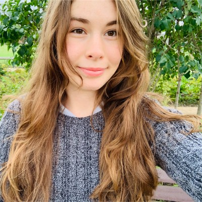

Student, Data Analyst, and aspiring Data Scientist
I am a graduate student in the Masters of Science in Data Science program at the Univeristy of Washington. I currently work as a Data Analyst for JH Kelly, LLC, an industrial general contractor.

Get to Know Me
I grew up in Portland, OR. At the age of 15, I attended Portland Community College, where I received my high
school diploma and Oregon Transfer Degree. It was here were my passion for academia,
and specifically mathematics, computer science, and statistics flourished. I earned my Bachelor of Science
in Mathematics, with Minors in Computer Science and Statistics from Oregon State University in December 2019.
At Oregon State University, I discovered my interest in research, and had the opportunity to work on several
exciting mathematical projects - including discovering a new way to generate the Euler Phi Function!
Generating Euler Phi using Sturmian Words
I am currently a full-time graduate student in the UW Master of Science in Data Science program and will be
graduating in March 2022. While here, I have had the opportunity to work on several fascinating projects
and have been obtaining experience working on machine learning and with real world datasets.
As a data analyst at JH Kelly, I design and generated company dashboards using Tableau data modeling
software to present data in a functional way, am developing the company intranet,
and write project proposals, organize and present weekly updates for various on-going projects.
My hobbies include hiking, painting, building robots and models, and recently - sky diving!
I am also teaching myself to play the keyboard and learning how to speak German.
Aber ich brauche noch viel Übung!
My first dive last summer!
Currently Working On
My focus lately has been getting more experience with machine learning and mastering techniques for processing
large amounts of data, such as using MapReduce, Spark. As well as learning how to utilize algorithms such as
Frequent itemsets and Association rules, Near Neighbor Search in High Dimensional Data,
Locality Sensitive Hashing (LSH), Dimensionality reduction, and Recommendation Systems.
One of my current academic projects includes building a Content and Collaborative Based Deep Learning
Recommendation System with my colleagues. Our recommendation system will consist of multiple neural networks,
as well as a linear regression and K-Means model. We will be utilizing the SmartcastTV proprietary dataset
, as they are interested in using our research to develop a recommendation system that is able to tackle
the Long Tail and Cold Start problems common to recommendation systems efficiently.
Image Source: Paul Covington, Jay Adams, and Emre Sargin. (2016).
Deep Neural Networks for YouTube Recommendations. In Proceedings of the 10th ACM Conference on
Recommender Systems (RecSys ’16).Association forComputing Machinery, New York, NY, USA, 191–198.
Research Interests
My interests are varied and constantly adapting, as I learn more about various fields. At a high level I am
interested in Machine Learning and Artificial Intelligence.
I am most passionate about how we can apply Machine Learning and Artificial Intelligence to wide array of fields
such as Sociology, Climatology, Geology, Biology, and Space Exploration.
Another interest of mine is quantum machine learning. I have begun research in my spare time about this
fascinating topic, and have plans for future projects merging the world of machine learning with quantum
algorithms.
Aspirations
My future career goals are to work with a team that provides data analytics, visualization,
and general consulting to projects that improve the environment and society in a sustainable way. Ideally
this goal would encompass and allow me to expand upon the skills I have learned in mathematics, statistics,
and programming.
I would like to pursue a career in research where I will be able to continue carving out meaningful
information out of mountains of data and I can always work on new and innovative projects.